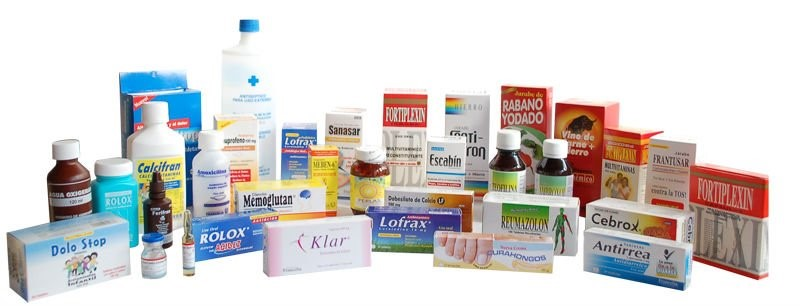

Llevamos bienestar hasta donde estes
Solo una llamada podrás solicitar de manera fácil,
rápida y segura tus productos de farmacia,
nosotros te lo entregaremos en la puerta de tu casa u
oficina a un precio favorable.